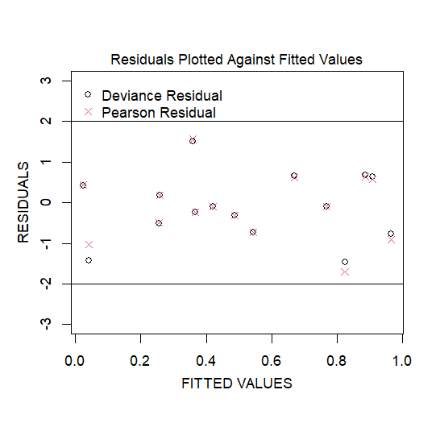
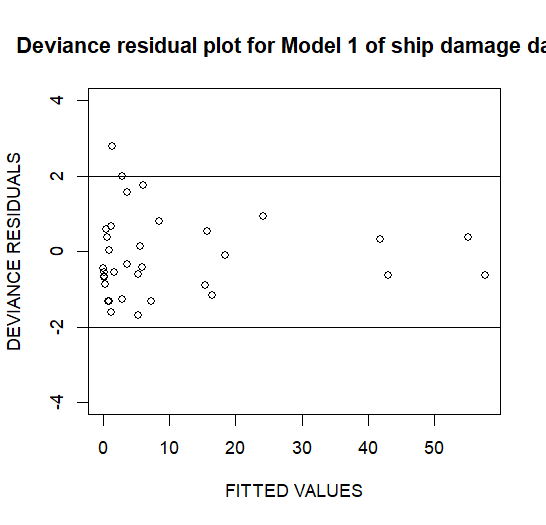

广义线性模型¶
1.1 产前护理数据的逻辑回归分析¶
数据准备¶
# 读取数据
prenatal.dat <- read.table("data/prenatal.dat", header=T)
# 创建响应变量
prenatal.dat$resp <- cbind(prenatal.dat$y, prenatal.dat$m-prenatal.dat$y)
模型分析¶
模型1：仅包含位置(loc)变量¶
model1 <- glm(resp~loc, family=binomial(link=logit), data=prenatal.dat)
主要发现： - 截距 = -2.0929 (p < 0.001) - 位置效应 = -0.6671 (p = 0.0166) - AIC = 31.969
模型2：包含诊所(clinic)和位置(loc)变量¶
model2 <- glm(resp ~ clinic + loc, family=binomial(link=logit), data=prenatal.dat)
主要发现： - 截距 = -1.7410 (p < 0.001) - 诊所效应 = -0.9863 (p = 0.00141) - 位置效应 = -0.1503 (p = 0.64894，不显著) - AIC = 23.262
模型3：包含交互效应¶
model3 <- glm(resp ~ clinic*loc, family=binomial(link=logit), data=prenatal.dat)
主要发现： - 截距 = -1.7568 (p < 0.001) - 诊所效应 = -0.9287 (p = 0.00822) - 位置效应 = 0.0076 (p = 0.98935，不显著) - 交互效应 = -0.2297 (p = 0.74104，不显著) - AIC = 25.155
模型4：仅包含诊所(clinic)变量¶
model4 <- glm(resp ~ clinic, family=binomial(link=logit), data=prenatal.dat)
主要发现： - 截距 = -1.7560 (p < 0.001) - 诊所效应 = -1.0624 (p < 0.001) - AIC = 21.47
结论¶
- 模型比较显示，模型4（仅包含诊所变量）具有最低的AIC值，可能是最优模型
- 诊所效应在所有模型中都显著
- 位置效应仅在单独建模时显著（模型1），加入其他变量后变得不显著
- 没有发现显著的交互效应
1.2 神经母细胞瘤儿童的预后分析¶
数据准备¶
# 读取数据
neuro.dat <- read.table("data/neuro.dat", header=T)
# 创建年龄和分期的指示变量（使用treatment对比）
neuro.dat$agef <- factor(neuro.dat$age)
neuro.dat$ageft <- C(neuro.dat$agef, treatment)
neuro.dat$stagef <- factor(neuro.dat$stage)
neuro.dat$stageft <- C(neuro.dat$stagef, treatment)
# 构建逻辑回归的响应变量
neuro.dat$resp <- cbind(neuro.dat$y, neuro.dat$m-neuro.dat$y)
模型分析¶
主效应模型¶
model1 <- glm(resp ~ ageft + stageft, family=binomial(link=logit), data=neuro.dat)
主要发现： - 年龄效应（相对于第一组）: - ageft2: -2.1181 (p < 0.001) - ageft3: -2.6130 (p < 0.001) - 分期效应（相对于第一期）: - stageft2: -1.2529 (p = 0.110) - stageft3: -1.7759 (p = 0.026) - stageft4: -4.3678 (p < 0.001) - stageft5: -1.0222 (p = 0.237)
残差分析¶
# 计算偏差残差和皮尔逊残差
rd1 <- residuals.glm(model1, "deviance")
rp1 <- (neuro.dat$y - neuro.dat$m*fv1)/sqrt(neuro.dat$m*fv1*(1-fv1))
# 绘制残差图
plot(fv1, rd1, ylim=c(-3,3))
points(fv1, rp1, pch=4, col=2)
残差图:

简化模型比较¶
仅包含年龄的模型¶
model2 <- glm(resp ~ ageft, family=binomial(link=logit), data=neuro.dat)
仅包含分期的模型¶
model3 <- glm(resp ~ stageft, family=binomial(link=logit), data=neuro.dat)
模型比较结果： - model1 vs model2: p = 3.309e-15（分期效应显著） - model1 vs model3: p = 7.464e-08（年龄效应显著）
置信区间估计¶
IV期vs I期的存活比值比的95%置信区间¶
# 点估计：exp(-4.3678) = 0.0127
# 95% CI: (0.0027, 0.0597)
24+月龄 vs 12-23月龄的存活比值比的95%置信区间¶
# 点估计：0.6096
# 95% CI: (0.2223, 1.6717)
结论¶
- 年龄和分期都是重要的预后因素
- 分期IV期患者的存活几率显著低于I期患者
- 不同年龄组间的存活差异不太明显（置信区间包含1）
- 模型拟合良好，残差分布合理
2.1 船舶损坏事件的数据分析¶
数据准备¶
# 读取数据
ship.dat <- read.table("data/ship.dat", header=T)
# 创建因子变量
ship.dat$typef <- factor(ship.dat$type)
ship.dat$typeft <- C(ship.dat$typef, treatment)
ship.dat$cyrf <- factor(ship.dat$cyr)
ship.dat$cyrft <- C(ship.dat$cyrf, treatment)
ship.dat$oyrf <- factor(ship.dat$oyr)
ship.dat$oyrft <- C(ship.dat$oyrf, treatment)
模型分析¶
主效应模型（包含偏置项）¶
model1 <- glm(y ~ typeft + cyrft + oyrft + offset(log(months)), family=poisson, data=ship.dat)
主要发现： - 截距 = -6.4059 (p < 0.001) - 船型效应： - typeft2: -0.5433 (p = 0.00222) - typeft3: -0.6874 (p = 0.0367) - 建造年份效应： - cyrft2: 0.6971 (p < 0.001) - cyrft3: 0.8184 (p < 0.001) - 操作年份效应： - oyrft2: 0.3845 (p = 0.00115)
诊断模型（将偏置项视为协变量）¶
model2 <- glm(y ~ typeft + cyrft + oyrft + log(months), family=poisson, data=ship.dat)
关联性检验¶
船型与事件频率的关联¶
model3a <- glm(y ~ cyrft + oyrft + offset(log(months)), family=poisson, data=ship.dat)
- p-value = 9.299568e-05（显著）
建造年份与事件频率的关联¶
model3b <- glm(y ~ typeft + oyrft + offset(log(months)), family=poisson, data=ship.dat)
- p-value = 6.974977e-07（显著）
操作年份与事件频率的关联¶
model3c <- glm(y ~ typeft + cyrft + offset(log(months)), family=poisson, data=ship.dat)
- p-value = 0.001094692（显著）
交互效应检验¶
船型与建造年份的交互效应¶
model4 <- glm(y ~ typeft + cyrft + oyrft + typeft*cyrft + offset(log(months)), family=poisson, data=ship.dat)
- p-value = 0.01966268（显著）
船型与操作年份的交互效应¶
model5 <- glm(y ~ typeft + cyrft + oyrft + typeft*oyrft + offset(log(months)), family=poisson, data=ship.dat)
- p-value = 0.2936317（不显著）
建造年份与操作年份的交互效应¶
model6 <- glm(y ~ typeft + cyrft + oyrft + cyrft*oyrft + offset(log(months)), family=poisson, data=ship.dat)
- p-value = 0.4091268（不显著）
残差图:

结论¶
- 船型、建造年份和操作年份对事件频率有显著影响
- 船型与建造年份之间存在显著的交互效应
- 其他交互效应不显著
- 模型拟合良好，残差分布合理
2.2 基于Gail等人(1980)的致癌性实验数据分析¶
数据准备¶
# 读取数据
rats.pw <- read.table('data/rats.pw.txt', header=T)
模型分析¶
对照组的分段常数模型¶
pfitC <- glm(count ~ offset(log(len)) + factor(interval),
family=poisson(link=log),
data=rats.pw,
subset=(trt==0))
主要发现： - 截距 = -3.0937 (p < 0.001) - 时间间隔效应： - interval2: 0.1625 (p = 0.485) - interval3: 0.3023 (p = 0.181) - interval4: -0.1569 (p = 0.527)
包含处理效应的乘法模型¶
pfit <- glm(count ~ offset(log(len)) + factor(interval) + trt,
family=poisson(link=log),
data=rats.pw)
主要发现： - 截距 = -3.08818 (p < 0.001) - 时间间隔效应： - interval2: 0.17185 (p = 0.380) - interval3: 0.20634 (p = 0.288) - interval4: -0.06454 (p = 0.752) - 处理效应 = -0.82302 (p < 0.001)
时间同质性检验¶
简化模型（无时间趋势）¶
pfit2 <- glm(count ~ offset(log(len)) + trt,
family=poisson(link=log),
data=rats.pw)
似然比检验结果： - 检验统计量 = pfit2\(deviance - pfit\)deviance - p-value = 0.4340077（不显著，支持时间同质性假设）
处理效应的时间一致性检验¶
pfit3 <- glm(count ~ offset(log(len)) + factor(interval) * trt,
family=poisson(link=log),
data=rats.pw)
主要发现： - 基础处理效应 = -0.80392 (p = 0.0114) - 处理与时间的交互效应： - interval2:trt: 0.03164 (p = 0.9413) - interval3:trt: -0.37639 (p = 0.3994) - interval4:trt: 0.28653 (p = 0.5131)
似然比检验结果： - p-value = 0.4926145（不显著，支持处理效应时间一致性假设）
结论¶
- 存在显著的处理效应（降低事件发生率）
- 时间趋势不显著
- 处理效应在不同时间点保持一致
- 模型支持使用更简单的时间同质性模型
2.3 黑色素瘤研究¶
数据准备¶
# 读取数据
derm.dat <- read.table("data/derm.dat", header=T)
# 创建因子变量
derm.dat$typef <- factor(derm.dat$type)
derm.dat$typeft <- C(derm.dat$typef, treatment)
derm.dat$sitef <- factor(derm.dat$locat)
derm.dat$siteft <- C(derm.dat$sitef, treatment)
模型分析¶
主效应模型¶
model1 <- glm(y ~ typeft + siteft, family=poisson, data=derm.dat)
主要发现： - 截距 = 1.7544 (p < 0.001) - 组织学类型效应： - typeft2: 1.6940 (p < 0.001) - typeft3: 1.3020 (p < 0.001) - typeft4: 0.4990 (p = 0.02173) - 部位效应： - siteft2: 0.4439 (p = 0.00427) - siteft3: 1.2010 (p < 0.001)
仅包含“组织学类型”主效应的模型¶
model2 <- glm(y ~ typeft, family=poisson, data=derm.dat)
仅包含“部位”主效应的模型¶
model3 <- glm(y ~ siteft, family=poisson, data=derm.dat)
包含交互效应的模型¶
model4 <- glm(y ~ typeft * siteft, family=poisson, data=derm.dat)
主要发现： - 交互效应显著，尤其是typeft2:siteft2, typeft3:siteft2, typeft4:siteft2等
结论¶
- 组织学类型和部位对黑色素瘤发生率有显著影响
- 存在显著的交互效应，表明不同类型和部位的组合对结果有不同影响
- 模型拟合良好，残差分布合理
2.4 安全带使用与事故死亡率分析¶
数据准备¶
# 读取数据
acc.dat <- read.table("D:/研究生/研一/试验设计与观察性研究/data/acc.dat", header=T)
# 创建因子变量
acc.dat$seatf <- factor(acc.dat$seat)
acc.dat$s <- C(acc.dat$seatf, treatment)
acc.dat$ejectf <- factor(acc.dat$eject)
acc.dat$e <- C(acc.dat$ejectf, treatment)
acc.dat$injuryf <- factor(acc.dat$injury)
acc.dat$i <- C(acc.dat$injuryf, treatment)
模型分析¶
完全饱和模型（三阶交互）¶
model1 <- glm(y ~ s*e*i, family=poisson, data=acc.dat)
二阶交互模型¶
model2 <- glm(y ~ s*e + s*i + e*i, family=poisson, data=acc.dat)
比较model1和model2：
1-pchisq(model2$deviance - model1$deviance, model2$df.residual - model1$df.residual)
简化模型分析¶
移除e*i交互项¶
model3 <- glm(y ~ s*e + s*i + s, family=poisson, data=acc.dat)
移除s*i交互项¶
model4 <- glm(y ~ s*e + e*i + e, family=poisson, data=acc.dat)
移除s*e交互项¶
model5 <- glm(y ~ s*i + e*i + i, family=poisson, data=acc.dat)
结论¶
- 二阶交互模型足以解释数据（与完全饱和模型相比没有显著差异）
- 所有二阶交互项都是重要的，不能进一步简化模型
- 安全带使用、弹出情况和伤害程度之间存在复杂的相互作用关系
3.1 癫痫试验分析¶
数据准备¶
# 加载MASS包并读取数据
library(MASS)
epi.dat <- read.table("data/epi.dat", header=T)
# 创建处理因子变量
epi.dat$treatf <- factor(epi.dat$treat)
epi.dat$treatft <- C(epi.dat$treatf, treatment)
模型分析¶
泊松回归模型¶
poisson1 <- glm(yi1 ~ treatft + prior + age, data=epi.dat, family=poisson)
主要发现： - 截距 = 0.2049 (p = 0.3666) - 处理效应 = -0.2047 (p = 0.0222) - 先前发作次数效应 = 0.0254 (p < 0.001) - 年龄效应 = 0.0325 (p < 0.001)
残差分析¶
# 构建偏差残差图
epi.dat$rdeviance1 <- residuals.glm(poisson1, type="deviance")
epi.dat$fitted.values1 <- poisson1$fitted.values
plot(epi.dat$fitted.values1, epi.dat$rdeviance1, ylim=c(-5,5),
xlab="FITTED VALUES", ylab="DEVIANCE RESIDUALS")
abline(h=-2)
abline(h=2)
数据探索¶
# 按处理组计算均值和方差
by(epi.dat$yi1, epi.dat$treatft, mean)
by(epi.dat$yi1, epi.dat$treatft, var)
结果： - 控制组：均值 = 9.357143，方差 = 102.7566 - 处理组：均值 = 8.580645，方差 = 332.7183
负二项回归模型¶
negbin2 <- glm.nb(yi1 ~ treatft + prior + age, data=epi.dat, link=log, init.theta=1.00)
简化负二项模型¶
negbin3 <- glm.nb(yi1 ~ treatft, data=epi.dat, link=log, init.theta=1.00)
结论¶
- 数据显示明显的过度离散现象（方差远大于均值）
- 负二项回归模型比泊松回归更适合这种过度离散的数据
- 处理效应显著，但需要控制先前发作次数和年龄的影响
- 残差分析显示模型拟合情况良好
线性混合效应模型¶
BodyWeight数据集的分析¶
1. 数据准备¶
# 创建处理组的指示变量
X1 <- ifelse(Diet == 1, 1, 0)
X2 <- ifelse(Diet == 2, 1, 0)
X3 <- ifelse(Diet == 3, 1, 0)
# 创建时间与处理组的交互项
time.X1 <- Time * X1
time.X2 <- Time * X2
time.X3 <- Time * X3
# 合并数据
BodyWeight <- data.frame(BodyWeight, X1, X2, X3, time.X1, time.X2, time.X3)
2. 模型拟合¶
2.1 随机截距-随机斜率模型¶
BodyWeight.lme1 <- lme(fixed = weight ~ -1 + X1 + X2 + X3 + time.X1 + time.X2 + time.X3,
random = ~ 1 + Time| Rat, data = BodyWeight)
主要结果： - 固定效应： * 组1基线: 251.65 (p < 0.001) * 组2基线: 452.32 (p < 0.001) * 组3基线: 503.72 (p < 0.001) * 组1时间斜率: 0.36 (p < 0.001) * 组2时间斜率: 0.97 (p < 0.001) * 组3时间斜率: 0.66 (p < 0.001) - 随机效应： * 截距标准差: 36.94 * 时间斜率标准差: 0.25 * 相关系数: -0.149
2.2 随机截距模型¶
BodyWeight.lme2 <- lme(fixed = weight ~ -1 + X1 + X2 + X3 + time.X1 + time.X2 + time.X3,
random = ~ 1 | Rat, data = BodyWeight)
3. 模型诊断¶
3.1 残差分析¶
# 残差图
plot(BodyWeight.lme1, resid(., type = 'p') ~ fitted(.), id = .01)
plot(BodyWeight.lme1, resid(., type = 'p') ~ fitted(.) | Diet, id = .01)
# 自相关函数图
plot(ACF(BodyWeight.lme1, maxLag=3), alpha=.01)
3.2 拟合值分析¶
# 观测值vs拟合值
plot(BodyWeight.lme1, weight ~ fitted(.), id=.05, abline=c(0,1))
plot(BodyWeight.lme1, weight ~ fitted(.) | Diet, id=.05, abline=c(0,1))
plot(BodyWeight.lme1, weight ~ fitted(.) | Rat, id=.05, abline=c(0,1))
3.3 正态性检验¶
# 残差Q-Q图
qqnorm(BodyWeight.lme1, ~ resid(.), id=.05)
# 随机效应Q-Q图
qqnorm(BodyWeight.lme1, ~ ranef(.), id=.05)
4. 预测分析¶
# 创建预测数据框
lme1.predict.df = data.frame(
Rat = rep(c(1,9,13), each=2),
Diet = rep(1:3, each=2),
Time = rep(c(30,50), 3),
# ... 其他预测变量 ...
)
# 生成预测值
predict(BodyWeight.lme1, newdata = lme1.predict.df, level = c(0,1))
5. 主要结论¶
- 三个处理组都显示显著的时间效应
- 组间存在显著的基线差异
- 随机效应显示个体间存在较大变异
- 模型诊断显示拟合良好
- 残差分析未发现明显的异常模式